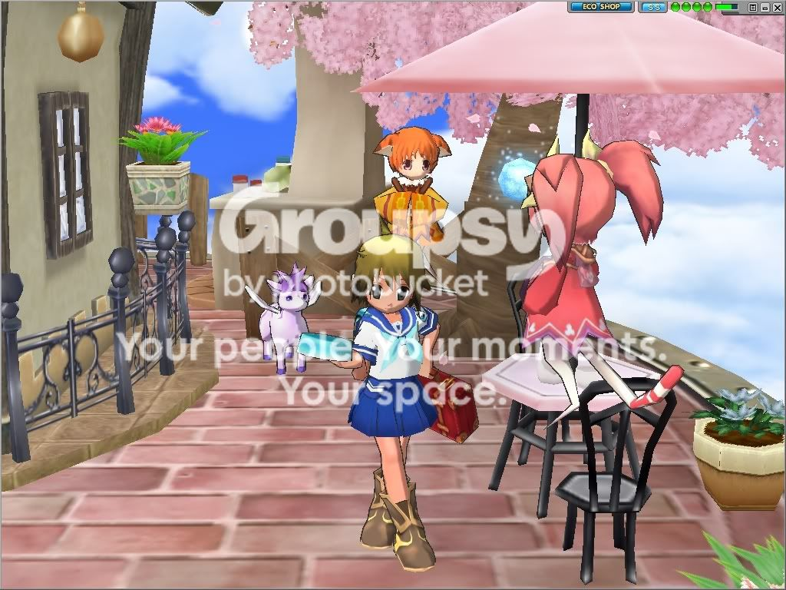
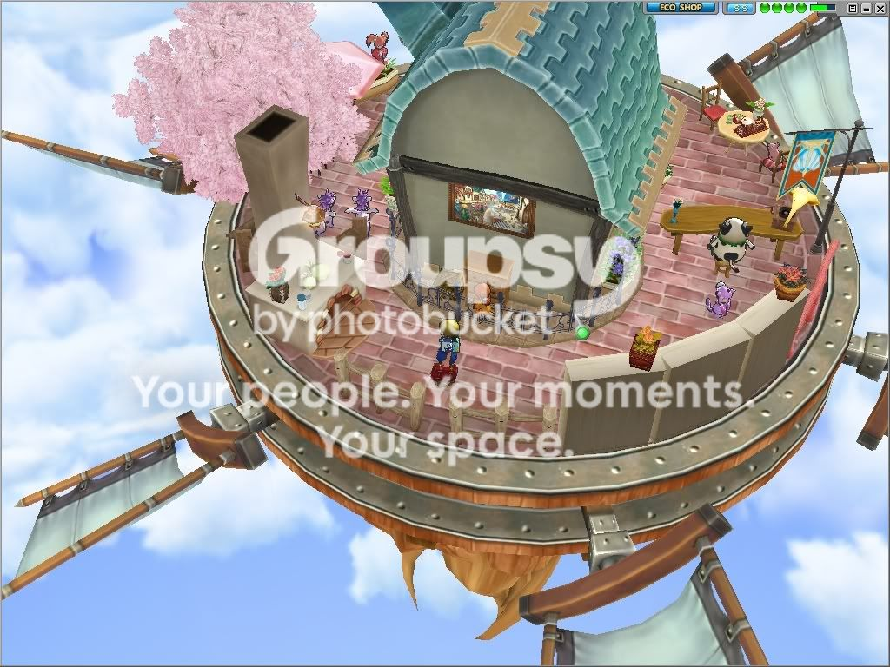
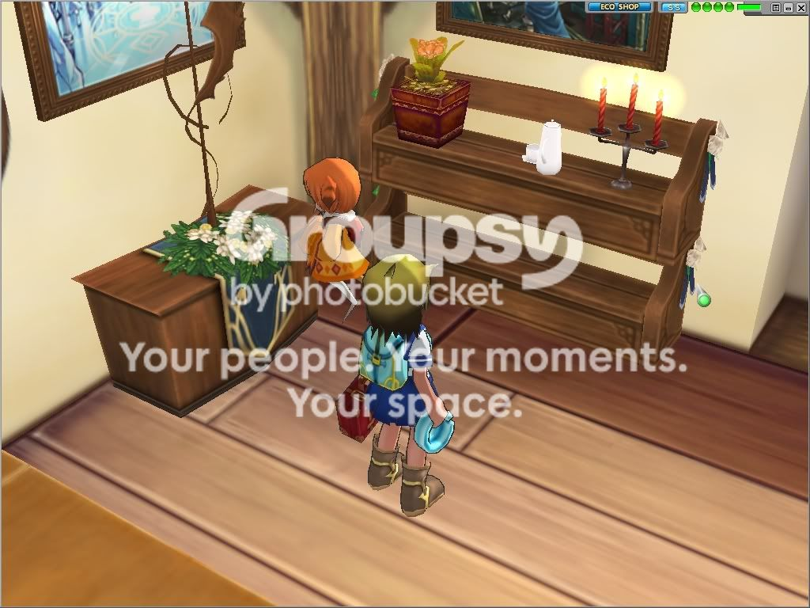

ลองเอาเก้าอี้โบสถ์มาวางเรียงติดกำแพงหลายๆชั้นดูสิ มันจะเป็นหิ้งวางของที่สวยงามเลยทีเดียวล่ะ
บ้าน Non€DeAd
บรรยากาศภายนอก

บรรยากาศภายใน

บ้าน ❤องุ่น❤
บรรยากาศภายนอก

บรรยากาศภายใน


http://eco.froztic.in.th/archive/ecofanclub/
http://eco.froztic.in.th/archive/ecofanclub/viewtopic.php?f=26&t=39854







Lock เขียน:ส่วนใหญ่ใช้บ้านที่ได้ฟรีปะคับ
ทำไมมันพื้นที่ในบ้านเยอะจัง ไปดูของเราเล็กนิดเดียวเอง
tita s.ทาโกราคาประมาณทะไหรคับ อยากได้